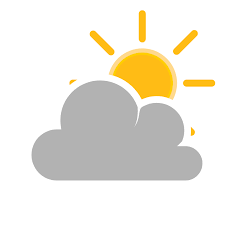
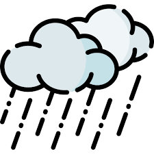
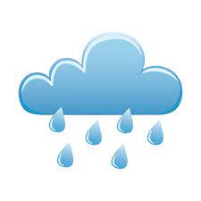

Application météorologique pour Montpellier
- 
Nous allons, créer tout au long de ce projet une application météorologique.
Cette application affichera les prévisions météorologiques des jours à venir à Montpellier.
Cependant, pour y parvenir nous avons séparé le travail en trois thème principale,
la première partie consisté à crée le site et de faire en sorte qu’elle soit fonctionnelle.
La seconde partie, nous allons créer voir une carte interactive de la ville de Montpellier
en fonction d’une couleur pour caractériser les différents aspects de la météo.
De ce fait nous aurrons à télécharger des données via un site météorologique.
Enfin, nous allons mettre en relation et fusionné tout nos données et probablement
un code qu’on aura mis en place afin de créer l’application.
Dans un premier temps, nous allons télécharger les données en écrivant un code python et
en utilisant le package requests et en seconde temps nous allons utilisée les données télécharger
afin de créer un tableau de bors affichant les température actuelle et celle à venir, l'humidité, les Précipitations etc...
Enfin, nous esseyerons de faire en sorte que les données se mette à jour automatiquement en modiffiant le code html et en
ajoutant une clef API pour faire une requête dans le site open-meteo.
Nous utiliserons également un code qu'on a trouver dans le site "weatherstack" un site fournissant
des cles API afin d'obtenir des données météorologiques comme "open-meteo".
Données passés en fonction d'une ville particulière
| Location ID |
Latitude |
Longitude |
Lieu |
Temperature (°C) |
Relative Humidity (%) |
| 0 |
43.58 |
3.96 |
Montpellier |
19.2 |
90 |
| 1 |
43.62 |
3.82 |
Juvignac |
18.6 |
91 |
| 2 |
43.56 |
3.90 |
Lattes |
19.2 |
90 |
| 3 |
43.56 |
3.96 |
Pérols |
19.4 |
90 |
Les viles étant dans la même région on peut constater que les données météorologiques sont assez proche.
Prévisions des température max et min pour les Prochains Jours
| Date |
Temperature Maximale (°C) |
Temperature Minimale (°C) |
| 2023-11-10 |
15.4 |
9.2 |
| 2023-11-11 |
15.3 |
8.0 |
| 2023-11-12 |
18.4 |
9.0 |
| 2023-11-13 |
17.5 |
14.7 |
| 2023-11-14 |
21.4 |
16.7 |
| 2023-11-15 |
20.5 |
12.5 |
| 2023-11-16 |
14.1 |
7.6 |
| 2023-11-17 |
13.5 |
7.4 |
Ma carte interactive centrée sur montpellier
Résultats pour 34070 Montpellier
Météo actuelle
16°C
Précipitations : 80%
Humidité : 70%
Vent : 35 km/h
Au cours de ce projet, nous avons pû réaliser differente recherche concernant la Création d'une application météorologique.
Suite à ses recherche nous avons alors mise en place une méthode de travaille afin de répondre
à differente problématique qu'on s'est poser.
| Météo |
jeudi |
ven  |
sam |
dim  |
lun |
mar |
mer |
| Température |
16 °C |
14 °C |
16 °C |
18 °C |
17 °C |
17 °C |
17 °C |
| Précipitations |
80% |
60% |
70% |
20% |
10% |
10% |
30% |
| Vent |
35 km/h |
30 km/h |
40 km/h |
25 km/h |
20 km/h |
22 km/h |
18 km/h |